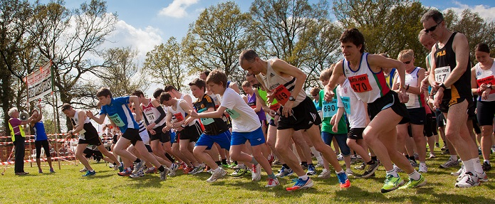

Pauline Dalton was third (1st W45) at the Kent GP Whitstable 10k on 5th May, while Geoff Vine was first M65 and Chris Desmond second M50. Andy Nicholl led the SAC runners home in 17th. The SAC results were:
| Pos | Time | Name | Club | Num | Chip |
| 17 | 38:12:00 | Andrew Nicoll | Sevenoaks AC | 632 | 38:12:00 |
| 20 | 38:58:00 | Chris Desmond | Sevenoaks AC | 670 | 38:58:00 |
| 56 | 42:45:00 | Geoffrey Vine | Sevenoaks AC | 319 | 42:44:00 |
| 59 | 43:05:00 | Pauline Dalton | Sevenoaks AC | 534 | 43:04:00 |
| 253 | 52:48:00 | Sarah Shewell | Sevenoaks AC | 195 | 52:41:00 |
Full results here.
On the same day, Jim Fitzmaurice was first M70 at the Ted Pepper 10k at Norman Park, Bromley, where Simon Rowe also ran well. Their results were:
Pos- ition | Bib- No. | Finish Time | Chip Time | Name | Gen- der | Cat- egory | Club | Rank |
|---|---|---|---|---|---|---|---|---|
| 96 | 151 | 00:46:47 | 00:46:35 | SIMON ROWE | M | M45 | Sevenoaks AC | 1 |
| 187 | 31 | 00:53:52 | 00:53:46 | JAMES FITZMAURICE | M | M70 | Sevenoaks AC | 2 |
Full results are here.

Also, three SAC runners attended the Hildenborough 10:
| entry_num | first_name | last_name | club | race_category | finish_time |
| 419 | Keith | Brown | Sevenoaks AC | M40 | 01:02:54 |
| 469 | Joe | Parsons | Sevenoaks AC | Male | 01:07:55 |
| 520 | Simon | Bishop | Sevenoaks AC | M50 | 01:13:54 |
... and four contested the 5:
| entry_num | first_name | last_name | club | race_category | finish_time |
| 234 | James | Wright | Sevenoaks AC | M40 | 31:44.0 |
| 261 | Dave | Truman | Sevenoaks AC | M50 | 39:33.0 |
| 464 | Deborah | Munton | Sevenoaks AC | F55 | 41:56.0 |
| 256 | Gillian | Sanders | Sevenoaks AC | F65 | 48:26.0 |
Full results here.